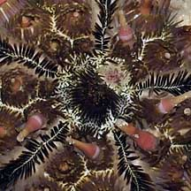
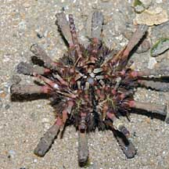
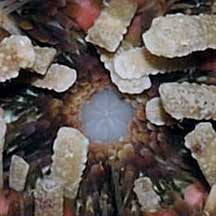
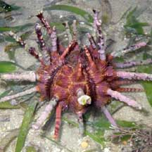

|
|
| echinoids text index | photo index |
| Phylum Echinodermata > Class Echinodea > sea urchins |
| Thorny
sea urchin Prionocidaris sp. Family Cidaridae updated Apr 2020 Where seen? This beautiful pink urchin with unique spiny spines is seasonally common on some of our Northern shores, in seagrass meadows. Sometimes many are seen during a visit, and then none for a while. Broken spines of this sea urchin may also be seen washed ashore. Features: Body diameter 4-5cm. It has spines on its spines! The thick spines are long (4-5cm to 10-12cm), armed with small spines and may be colourful and banded in pink and yellow or beige. Because of its thick spines, it is sometimes called the Pencil sea urchin. Several different kinds of spines may be seen even on the same sea urchin. On the upper side, some long spines have sharp tips and sharp small spines. Other long spines may be blunt or or even square-tipped and have blunt small spines. On the upperside, there are five short, sharp pointed spines usually held crossed over one another forming a tent over the centre of the body. Long tube feet may emerge from the sides of the spherical body when the sea urchin is submerged in water. On the underside, the mouth is surrounded by short flattened blunt spines. Other longer spines on the underside have blunt tips too, possibly used for burrowing? In some, the longer spines are covered sediments. Sometimes, tiny brittle stars are seen wrapped around its spines. Or encrusting ascidians may grow on the spines. Status and threats: Prionocidaris baculosa is listed as Vulnerable in the Red List of threatened animals of Singapore. The other species recorded for Singapore is Prionocidaris bispinosa. |
 Pulau Sekudu, May 08 |
 Upperside with five short sharp spines. |
 Beting Bronok, Jun 03 |
|
 Underside. |
 Mouth surrounded by flattened spines. |
| Thorny sea urchins on Singapore shores |
On wildsingapore
flickr
|
| Other sightings on Singapore shores |
 Cyrene Reef, Mar 09 |
| Prionocidaris
species recorded for Singapore from Wee Y.C. and Peter K. L. Ng. 1994. A First Look at Biodiversity in Singapore. in red are those listed among the threatened animals of Singapore from Davison, G.W. H. and P. K. L. Ng and Ho Hua Chew, 2008. The Singapore Red Data Book: Threatened plants and animals of Singapore.
|
Links
|